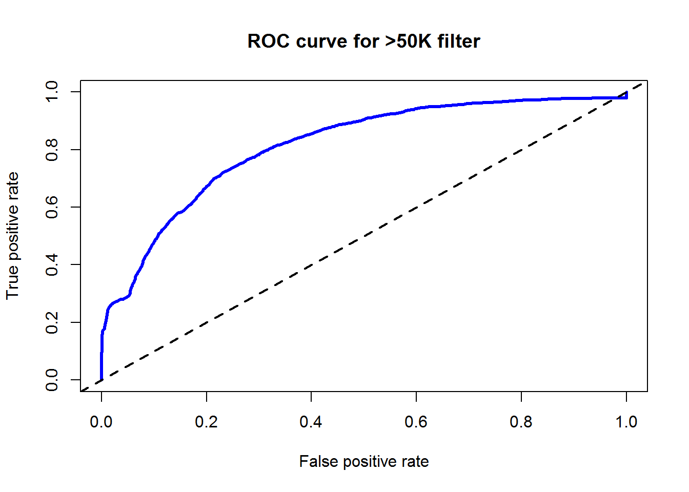

3.Naive Bayes
Affluence Tan
January 3, 2017
简单理解朴素贝叶斯
朴素贝叶斯分类来自于贝叶斯定理的简单应用。
公式定义
假设某样本有n项特征（Feature），分别为\(F_1\)、\(F_2\)、…、\(F_n\)。现有m个类别（Category），分别为\(C_1\)、\(C_2\)、…、\(C_m\)。贝叶斯分类器就是计算出概率最大的那个分类，也就是求下面这个算式的最大值：
\(P(C|F_1F_2...F_n)=\frac{P(F_1F_2...F_n|C)P(C)}{P(F_1F_2...F_n)}\)
由于\(P(F_1F_2...F_n)\)对每一个分类都是相同的，可以省。所以就变成了求下面公式的最大值：
\(P(F_1F_2...F_n|C)P(C)\)
什么是朴素
朴素是假设所有特征都彼此独立，这个假设也是其缺点。因此公式变成了：
\(P(F_1F_2...F_n|C)P(C)=P(F_1|C)P(F_2|C)...P(F_n|C)P(C)\)
拉普拉斯估计
当其中一个特征的似然概率为0时，由于上面公式连乘的原因，后验概率一定为0。这个在通常情况下将没有意义。这时候，可以使用拉普拉斯估计解决，在频率表的每个计数上面加一个比较小的数，通常为1。
朴素贝叶斯的变量
运用朴素贝叶斯分类，变量应该都是离散型变量，如果是连续型变量，要先分段。太少的分段会导致信息量减少，重要趋势被掩盖，太多分段导致频率的计数值太小。
R实战
获取数据集
library(readr)
adult <- read_csv("adult.csv",na="?")
adult$income = as.factor(adult$income)
str(adult)## Classes 'tbl_df', 'tbl' and 'data.frame': 32561 obs. of 15 variables:
## $ age : int 39 50 38 53 28 37 49 52 31 42 ...
## $ workclass : chr "State-gov" "Self-emp-not-inc" "Private" "Private" ...
## $ fnlwgt : int 77516 83311 215646 234721 338409 284582 160187 209642 45781 159449 ...
## $ education : chr "Bachelors" "Bachelors" "HS-grad" "11th" ...
## $ education_num : int 13 13 9 7 13 14 5 9 14 13 ...
## $ marital_status: chr "Never-married" "Married-civ-spouse" "Divorced" "Married-civ-spouse" ...
## $ occupation : chr "Adm-clerical" "Exec-managerial" "Handlers-cleaners" "Handlers-cleaners" ...
## $ relationship : chr "Not-in-family" "Husband" "Not-in-family" "Husband" ...
## $ race : chr "White" "White" "White" "Black" ...
## $ sex : chr "Male" "Male" "Male" "Male" ...
## $ capital_gain : int 2174 0 0 0 0 0 0 0 14084 5178 ...
## $ capital_loss : int 0 0 0 0 0 0 0 0 0 0 ...
## $ hours_per_week: int 40 13 40 40 40 40 16 45 50 40 ...
## $ native_country: chr "United-States" "United-States" "United-States" "United-States" ...
## $ income : Factor w/ 2 levels "<=50K",">50K": 1 1 1 1 1 1 1 2 2 2 ...这个是美国成人的人口统计资料，要预测的是income这个变量。
探索和准备数据集
library(Hmisc)
library(ggplot2)
library(dplyr)describe(adult)## adult
##
## 15 Variables 32561 Observations
## ---------------------------------------------------------------------------
## age
## n missing unique Mean .05 .10 .25 .50 .75
## 32561 0 73 38.58 19 22 28 37 48
## .90 .95
## 58 63
##
## lowest : 17 18 19 20 21, highest: 85 86 87 88 90
## ---------------------------------------------------------------------------
## workclass
## n missing unique
## 30725 1836 8
##
## Federal-gov (960, 3%), Local-gov (2093, 7%)
## Never-worked (7, 0%), Private (22696, 74%)
## Self-emp-inc (1116, 4%)
## Self-emp-not-inc (2541, 8%)
## State-gov (1298, 4%), Without-pay (14, 0%)
## ---------------------------------------------------------------------------
## fnlwgt
## n missing unique Mean .05 .10 .25 .50 .75
## 32561 0 21648 189778 39460 65716 117827 178356 237051
## .90 .95
## 329054 379682
##
## lowest : 12285 13769 14878 18827 19214
## highest: 1226583 1268339 1366120 1455435 1484705
## ---------------------------------------------------------------------------
## education
## n missing unique
## 32561 0 16
##
## 10th 11th 12th 1st-4th 5th-6th 7th-8th 9th Assoc-acdm Assoc-voc
## Frequency 933 1175 433 168 333 646 514 1067 1382
## % 3 4 1 1 1 2 2 3 4
## Bachelors Doctorate HS-grad Masters Preschool Prof-school
## Frequency 5355 413 10501 1723 51 576
## % 16 1 32 5 0 2
## Some-college
## Frequency 7291
## % 22
## ---------------------------------------------------------------------------
## education_num
## n missing unique Mean .05 .10 .25 .50 .75
## 32561 0 16 10.08 5 7 9 10 12
## .90 .95
## 13 14
##
## 1 2 3 4 5 6 7 8 9 10 11 12 13 14
## Frequency 51 168 333 646 514 933 1175 433 10501 7291 1382 1067 5355 1723
## % 0 1 1 2 2 3 4 1 32 22 4 3 16 5
## 15 16
## Frequency 576 413
## % 2 1
## ---------------------------------------------------------------------------
## marital_status
## n missing unique
## 32561 0 7
##
## Divorced (4443, 14%), Married-AF-spouse (23, 0%)
## Married-civ-spouse (14976, 46%)
## Married-spouse-absent (418, 1%)
## Never-married (10683, 33%)
## Separated (1025, 3%), Widowed (993, 3%)
## ---------------------------------------------------------------------------
## occupation
## n missing unique
## 30718 1843 14
##
## Adm-clerical (3770, 12%), Armed-Forces (9, 0%)
## Craft-repair (4099, 13%)
## Exec-managerial (4066, 13%)
## Farming-fishing (994, 3%)
## Handlers-cleaners (1370, 4%)
## Machine-op-inspct (2002, 7%)
## Other-service (3295, 11%)
## Priv-house-serv (149, 0%)
## Prof-specialty (4140, 13%)
## Protective-serv (649, 2%), Sales (3650, 12%)
## Tech-support (928, 3%), Transport-moving (1597, 5%)
## ---------------------------------------------------------------------------
## relationship
## n missing unique
## 32561 0 6
##
## Husband Not-in-family Other-relative Own-child Unmarried Wife
## Frequency 13193 8305 981 5068 3446 1568
## % 41 26 3 16 11 5
## ---------------------------------------------------------------------------
## race
## n missing unique
## 32561 0 5
##
## Amer-Indian-Eskimo (311, 1%)
## Asian-Pac-Islander (1039, 3%)
## Black (3124, 10%), Other (271, 1%), White (27816, 85%)
## ---------------------------------------------------------------------------
## sex
## n missing unique
## 32561 0 2
##
## Female (10771, 33%), Male (21790, 67%)
## ---------------------------------------------------------------------------
## capital_gain
## n missing unique Mean .05 .10 .25 .50 .75
## 32561 0 119 1078 0 0 0 0 0
## .90 .95
## 0 5013
##
## lowest : 0 114 401 594 914
## highest: 25236 27828 34095 41310 99999
## ---------------------------------------------------------------------------
## capital_loss
## n missing unique Mean .05 .10 .25 .50 .75
## 32561 0 92 87.3 0 0 0 0 0
## .90 .95
## 0 0
##
## lowest : 0 155 213 323 419, highest: 3004 3683 3770 3900 4356
## ---------------------------------------------------------------------------
## hours_per_week
## n missing unique Mean .05 .10 .25 .50 .75
## 32561 0 94 40.44 18 24 40 40 45
## .90 .95
## 55 60
##
## lowest : 1 2 3 4 5, highest: 95 96 97 98 99
## ---------------------------------------------------------------------------
## native_country
## n missing unique
## 31978 583 41
##
## lowest : Cambodia Canada China Columbia Cuba
## highest: Thailand Trinadad&Tobago United-States Vietnam Yugoslavia
## ---------------------------------------------------------------------------
## income
## n missing unique
## 32561 0 2
##
## <=50K (24720, 76%), >50K (7841, 24%)
## ---------------------------------------------------------------------------从上面的结果可以看到，数据中有一些缺失值。但是据说朴素贝叶斯对缺失值不敏感。所以先不管。 最后一个变量是预测变量，分别是大于50K和小于等于50K。并且给出了比例24%和76%。下面切分数据集。
# create training and test data
adult_train <- adult[1:21000, ]
adult_test <- adult[21001:32561, ]基于数据集训练模型
# load the "e1701" library
library(e1071)
adult_classifier <- naiveBayes(income ~ ., data = adult_train,laplace = 1)
adult_predictions <- predict(adult_classifier, adult_test[,-15])查阅了一下e1071的帮助文档，naiveBayes的data变量接受数值型变量和分类型变量。前面提到，朴素贝叶斯只能用于分类型变量，估计函数自动进行了转化。
评估模型性能
# load the "gmodels" library
library(gmodels)
library(ROCR)## Loading required package: gplots##
## Attaching package: 'gplots'## The following object is masked from 'package:stats':
##
## lowess# Create the cross tabulation of predicted vs. actual
CrossTable(x = adult_test$income, y = adult_predictions,
prop.chisq=FALSE)##
##
## Cell Contents
## |-------------------------|
## | N |
## | N / Row Total |
## | N / Col Total |
## | N / Table Total |
## |-------------------------|
##
##
## Total Observations in Table: 11561
##
##
## | adult_predictions
## adult_test$income | <=50K | >50K | Row Total |
## ------------------|-----------|-----------|-----------|
## <=50K | 8337 | 387 | 8724 |
## | 0.956 | 0.044 | 0.755 |
## | 0.804 | 0.323 | |
## | 0.721 | 0.033 | |
## ------------------|-----------|-----------|-----------|
## >50K | 2027 | 810 | 2837 |
## | 0.714 | 0.286 | 0.245 |
## | 0.196 | 0.677 | |
## | 0.175 | 0.070 | |
## ------------------|-----------|-----------|-----------|
## Column Total | 10364 | 1197 | 11561 |
## | 0.896 | 0.104 | |
## ------------------|-----------|-----------|-----------|
##
## adult_predictions_prob <- predict(adult_classifier, adult_test[,-15],type = "raw")
pred <- prediction(predictions = adult_predictions_prob[,2] ,labels = adult_test$income)
perf.auc <- performance(pred,measure = "auc")
str(perf.auc)## Formal class 'performance' [package "ROCR"] with 6 slots
## ..@ x.name : chr "None"
## ..@ y.name : chr "Area under the ROC curve"
## ..@ alpha.name : chr "none"
## ..@ x.values : list()
## ..@ y.values :List of 1
## .. ..$ : num 0.814
## ..@ alpha.values: list()perf <- performance(pred,measure = "tpr", x.measure = "fpr")
plot(perf, main = "ROC curve for >50K filter", col ="blue",lwd = 3)
abline(a=0,b=1,lwd =2,lty =2)
可以看到，模型的准确度为0.721+0.070 = 0.791，也就是说79.1是预测正确了，乍一看不错，但是我们知道，即便没有模型，全部评判为收入不到50k,我们也可以有76%的准确度，模型的效果有限。而且在收入大于50K的人群中，只有28.6%的人被挑选出来了，模型还需要改进。
ROC曲线这里先不解释。
提高模型性能
之前提到，我不太清楚e1071包中的naiveBayes是如何给连续变量转化为类别型的。现在我自己来做这件事，看看能不能提高模型的预测。
先画图考察一下连续变量。
# plot histogram
varname <- c("age","fnlwgt","education_num","capital_gain","capital_loss","hours_per_week")
adult_continuous <- adult[varname]
adult_continuous$income = adult$income
g_age <- ggplot(data = adult_continuous,aes(x=age,fill=income))
g_age + geom_bar()+facet_grid(income ~ .)## stat_bin: binwidth defaulted to range/30. Use 'binwidth = x' to adjust this.
## stat_bin: binwidth defaulted to range/30. Use 'binwidth = x' to adjust this.
g_fnlwgt <- ggplot(data = adult_continuous,aes(x=fnlwgt,fill=income))
g_fnlwgt + geom_bar()+facet_grid(income ~ .)## stat_bin: binwidth defaulted to range/30. Use 'binwidth = x' to adjust this.
## stat_bin: binwidth defaulted to range/30. Use 'binwidth = x' to adjust this.
g_education <- ggplot(data = adult_continuous,aes(x=education_num,fill=income))
g_education + geom_bar()+facet_grid(income ~ .)## stat_bin: binwidth defaulted to range/30. Use 'binwidth = x' to adjust this.
## stat_bin: binwidth defaulted to range/30. Use 'binwidth = x' to adjust this.
g_gain <- ggplot(data = adult_continuous,aes(x=capital_gain,fill=income))
g_gain + geom_bar()+facet_grid(income ~ .)## stat_bin: binwidth defaulted to range/30. Use 'binwidth = x' to adjust this.
## stat_bin: binwidth defaulted to range/30. Use 'binwidth = x' to adjust this.
g_loss <- ggplot(data = adult_continuous,aes(x=capital_loss,fill=income))
g_loss + geom_bar()+facet_grid(income ~ .)## stat_bin: binwidth defaulted to range/30. Use 'binwidth = x' to adjust this.
## stat_bin: binwidth defaulted to range/30. Use 'binwidth = x' to adjust this.
g_hours <- ggplot(data = adult_continuous,aes(x=hours_per_week,fill=income))
g_hours + geom_bar()+facet_grid(income ~ .)## stat_bin: binwidth defaulted to range/30. Use 'binwidth = x' to adjust this.
## stat_bin: binwidth defaulted to range/30. Use 'binwidth = x' to adjust this.
可以看到fnlwgt变量没有什么影响，所以就不做离散化处理了。capital_gain和capital_loss 有太多0，先把0去掉再画一下直方图。
capital_gain_remove0 = filter(.data = adult,capital_gain > 0)
g_gain <- ggplot(data = capital_gain_remove0,aes(x=capital_gain,fill=income))
g_gain + geom_bar() + facet_grid(income ~ .)## stat_bin: binwidth defaulted to range/30. Use 'binwidth = x' to adjust this.
## stat_bin: binwidth defaulted to range/30. Use 'binwidth = x' to adjust this.
capital_loss_remove0 = filter(.data = adult,capital_loss > 0)
g_loss <- ggplot(data = capital_loss_remove0,aes(x=capital_loss,fill=income))
g_loss + geom_bar() + facet_grid(income ~ .)## stat_bin: binwidth defaulted to range/30. Use 'binwidth = x' to adjust this.
## stat_bin: binwidth defaulted to range/30. Use 'binwidth = x' to adjust this.
现在做类别化处理
adult_str <- adult
adult_str$age <- as.factor(floor(adult$age / 10))
adult_str$education_num <- as.factor(adult$education_num)
# capital_gain discretization according to histogram
capital_gain <- adult$capital_gain
capital_gain <- ifelse(capital_gain <6000 & capital_gain >0, 1 ,capital_gain)
capital_gain <- ifelse(capital_gain <30000 & capital_gain >=6000, 2 ,capital_gain)
capital_gain <- ifelse(capital_gain <60000 & capital_gain >=30000, 3 ,capital_gain)
capital_gain <- ifelse(capital_gain >=60000, 4 ,capital_gain)
adult_str$capital_gain <- as.factor(capital_gain)
# capital_loss discretization according to histogram
capital_loss <- adult$capital_loss
capital_loss <- ifelse(capital_loss <1400 & capital_loss >0, 1 ,capital_loss)
capital_loss <- ifelse(capital_loss <1700 & capital_loss >=1400, 2 ,capital_loss)
capital_loss <- ifelse(capital_loss <2200 & capital_loss >=1700, 3 ,capital_loss)
capital_loss <- ifelse(capital_loss <3000 & capital_loss >=2200, 4 ,capital_loss)
capital_loss <- ifelse(capital_loss >=3000, 5 ,capital_loss)
adult_str$capital_loss <- as.factor(capital_loss)
adult_str$hours_per_week <- as.factor(floor(adult$hours_per_week / 10))在capital_gain和capital_loss这两个变量上面我多花了点心思，下面重新拟合模型。
# create training and test data
adult_train <- adult_str[1:21000, ]
adult_test <- adult_str[21001:32561, ]
# build model
adult_classifier <- naiveBayes(income ~ ., data = adult_train,laplace = 1)
adult_predictions <- predict(adult_classifier, adult_test[,-15])# Create the cross tabulation of predicted vs. actual
CrossTable(x = adult_test$income, y = adult_predictions,
prop.chisq=FALSE)##
##
## Cell Contents
## |-------------------------|
## | N |
## | N / Row Total |
## | N / Col Total |
## | N / Table Total |
## |-------------------------|
##
##
## Total Observations in Table: 11561
##
##
## | adult_predictions
## adult_test$income | <=50K | >50K | Row Total |
## ------------------|-----------|-----------|-----------|
## <=50K | 8127 | 597 | 8724 |
## | 0.932 | 0.068 | 0.755 |
## | 0.851 | 0.297 | |
## | 0.703 | 0.052 | |
## ------------------|-----------|-----------|-----------|
## >50K | 1424 | 1413 | 2837 |
## | 0.502 | 0.498 | 0.245 |
## | 0.149 | 0.703 | |
## | 0.123 | 0.122 | |
## ------------------|-----------|-----------|-----------|
## Column Total | 9551 | 2010 | 11561 |
## | 0.826 | 0.174 | |
## ------------------|-----------|-----------|-----------|
##
## 可以看到，模型的预测准确率有了提升(0.703+0.122=0.825),更为关键的是对收入大于50K的人群的预测有提升。精确度和回溯率分别为0.703和0.498。
小结
上面的模型改进也可以看到，朴素贝叶斯模型比较适合于类别变量，不同的连续变量类别化的方法会对模型精度产生比较大的影响。
朴素贝叶斯更加典型的应用场景是在过滤垃圾邮件分类的方面。
Copyright © 2016 Affluence Tan. All rights reserved.